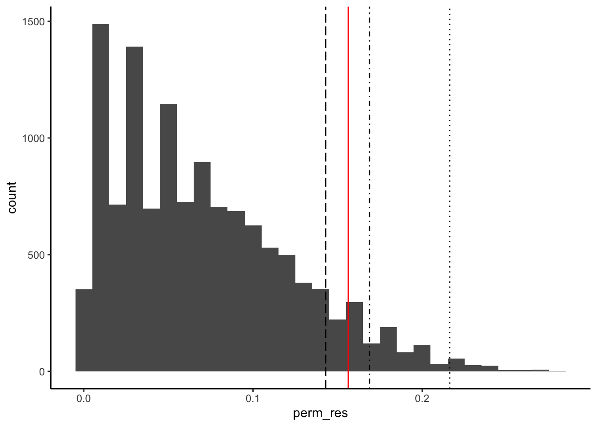
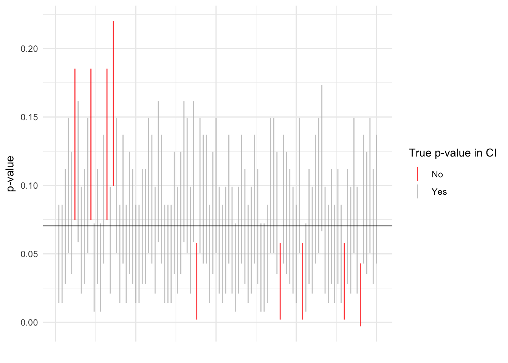

# Install and load packages ---------------
packages <- c(
"tidyverse",
"ggrepel",
"forcats",
"latex2exp",
"grid",
"gridExtra",
"scales",
"haven",
"kableExtra",
"magrittr"
)
# Change to install = TRUE to install the required packages
pacman::p_load(packages, character.only = TRUE)The data can be downloaded here.
# data of treatment assignment by school
df <- read_dta("../data/Bloom2020/table2/table2.dta")
df_clean <- df %>%
filter(year == 2011, experimental == 1) %>%
select(fcode, treatment2011, management) %>%
group_by(fcode) %>%
summarise_at(vars(treatment2011, management), mean, na.rm = TRUE)get_perm_res <- function(df_clean, treatment_perm, tau, type) {
df_tmp <- df_clean %>%
mutate(
Y1 = management * (treatment2011 == 1) + (management + tau) * (treatment2011 == 0),
Y0 = management * (treatment2011 == 0) + (management - tau) * (treatment2011 == 1),
)
if (type == "mean") {
output <- map_dbl(
seq(ncol(treatment_perm)),
~ abs(
mean((df_tmp %>% pull(Y1))[treatment_perm[, .]]) -
mean((df_tmp %>% pull(Y0))[-treatment_perm[, .]]) - tau
)
)
} else if (type == "rank") {
output <- map_dbl(
seq(ncol(treatment_perm)),
~ abs(
mean(rank(df_tmp %>% pull(Y1))[treatment_perm[, .]]) -
mean(rank(df_tmp %>% pull(Y0))[-treatment_perm[, .]])
)
)
}
return(output)
}treatment_perm <- combn(nrow(df_clean), nrow(df_clean %>% filter(treatment2011 == 1)))tau_seq <- seq(-0.10, 0.35, by = 0.025)mean_diffs <- map_dbl(
tau_seq,
~ mean(
get_perm_res(df_clean, treatment_perm, ., type = "mean") > (
abs(
mean(df_clean %>% filter(treatment2011 == 1) %>% .$management) -
mean(df_clean %>% filter(treatment2011 == 0) %>% .$management) - .
)
)
)
)
rank_diffs <- map_dbl(
tau_seq,
function(x) mean(
get_perm_res(df_clean, treatment_perm, x, type = "rank") > abs(
mean(rank(
df_clean %>%
mutate(
Y1 = management * (treatment2011 == 1) + (management + x) * (treatment2011 == 0),
Y0 = management * (treatment2011 == 0) + (management - x) * (treatment2011 == 1),
) %>%
pull(Y1)
)[df_clean$treatment2011 == 1]) -
mean(rank(
df_clean %>%
mutate(
Y1 = management * (treatment2011 == 1) + (management + x) * (treatment2011 == 0),
Y0 = management * (treatment2011 == 0) + (management - x) * (treatment2011 == 1),
) %>%
pull(Y0)
)[df_clean$treatment2011 == 0])
)
)
)tibble(
tau = tau_seq,
mean_diff_p = mean_diffs %>% formatC(digits = 3, format = "f"),
rank_diff_p = rank_diffs %>% formatC(digits = 3, format = "f")
) %>%
mutate(
mean_diff_p = cell_spec(
mean_diff_p,
color = ifelse(mean_diff_p >= 0.10, "red", "black"),
),
rank_diff_p = cell_spec(
rank_diff_p,
color = ifelse(rank_diff_p >= 0.10, "red", "black"),
)
) %>%
set_colnames(NULL) %>%
kable("html", escape = FALSE, booktabs = TRUE, align = c("l", rep("c", 2))) %>%
add_header_above(
c("Hypothesized treatment effect", "$p$-value (level)", "$p$-value (rank)")
) %>%
kable_styling(position = "center")| -0.100 | 0.007 | 0.006 |
| -0.075 | 0.012 | 0.011 |
| -0.050 | 0.024 | 0.022 |
| -0.025 | 0.042 | 0.051 |
| 0.000 | 0.071 | 0.064 |
| 0.025 | 0.120 | 0.104 |
| 0.050 | 0.207 | 0.128 |
| 0.075 | 0.325 | 0.244 |
| 0.100 | 0.493 | 0.364 |
| 0.125 | 0.705 | 0.541 |
| 0.150 | 0.941 | 0.933 |
| 0.175 | 0.820 | 0.981 |
| 0.200 | 0.592 | 0.679 |
| 0.225 | 0.402 | 0.541 |
| 0.250 | 0.258 | 0.418 |
| 0.275 | 0.164 | 0.082 |
| 0.300 | 0.092 | 0.066 |
| 0.325 | 0.053 | 0.030 |
| 0.350 | 0.030 | 0.030 |
set.seed(123)
actual_mean_diff <- abs(
mean(df_clean %>% filter(treatment2011 == 1) %>% .$management) -
mean(df_clean %>% filter(treatment2011 == 0) %>% .$management)
)
perm_sim_res <- map_dbl(
c(100, 1000, 10000),
~ mean(
get_perm_res(df_clean, treatment_perm[, sample(seq(ncol(treatment_perm)), .)], .0, type = "mean") >
actual_mean_diff
)
)
true_p <- mean(
get_perm_res(df_clean, treatment_perm, .0, type = "mean") > actual_mean_diff
)cbind(
c(100, 1000, 10000, ncol(treatment_perm)) %>% formatC(format = "d", big.mark = ","),
c(perm_sim_res, true_p) %>% format(digits = 2, format = "f"),
c(
paste0(
"(",
sqrt(perm_sim_res * (1 - perm_sim_res) / c(100, 1000, 10000)) %>% format(digits = 2, format = "f"),
")"
),
""
)
) %>%
kable("html", booktabs = TRUE, align = c("l", rep("c", 2))) %>%
add_header_above(
c("Number of simulations (the last row is the exact test)", "$p$-value", "($\\widehat{\\text{s.e.}}$)")
) %>%
kable_styling(position = "center")| 100 | 0.060 | (0.0237) |
| 1,000 | 0.061 | (0.0076) |
| 10,000 | 0.070 | (0.0025) |
| 12,376 | 0.071 |
perm_res <- get_perm_res(df_clean, treatment_perm, .0, type = "mean")
actual_mean_diff <- abs(
mean(df_clean %>% filter(treatment2011 == 1) %>% .$management) -
mean(df_clean %>% filter(treatment2011 == 0) %>% .$management)
)ggplot() +
geom_histogram(aes(x = perm_res), binwidth = 0.01) +
# theme_minimal() +
geom_vline(xintercept = quantile(perm_res, .90), linetype = 5) +
geom_vline(xintercept = quantile(perm_res, .95), linetype = 4) +
geom_vline(xintercept = quantile(perm_res, .99), linetype = 3) +
geom_vline(xintercept = actual_mean_diff, color = "red") +
theme(
panel.background = element_blank(),
panel.grid.major = element_blank(),
panel.grid.minor = element_blank(),
axis.line = element_line(colour = "black")
)
set.seed(111)
perm_test_100 <- map_dbl(
seq(10000),
~ mean(
get_perm_res(df_clean, treatment_perm[, sample(seq(ncol(treatment_perm)), 100)], .0, type = "mean") >= actual_mean_diff
)
)
perm_test_100_df <- tibble(
p_val = perm_test_100
) %>%
mutate(
ci_lower = p_val - 1.645 * sqrt(p_val * (1 - p_val) / 100),
ci_upper = p_val + 1.645 * sqrt(p_val * (1 - p_val) / 100),
true_in = ((true_p >= ci_lower) & (true_p <= ci_upper)),
n = row_number()
)print(perm_test_100_df$true_in %>% mean)## [1] 0.9107ggplot(perm_test_100_df %>% slice(seq(100)), aes(x = n, y = p_val, ymin = ci_lower, ymax = ci_upper)) +
geom_linerange(aes(color = (true_in == TRUE)), alpha = 0.8) +
geom_hline(yintercept = true_p, alpha = 0.5) +
theme_minimal() +
ylab(TeX("$p$-value")) +
xlab("") +
scale_color_manual(
values = c("red", "gray"),
name = TeX("True $p$-value in CI"),
labels = c("No", "Yes")
) +
theme(axis.text.x = element_blank())